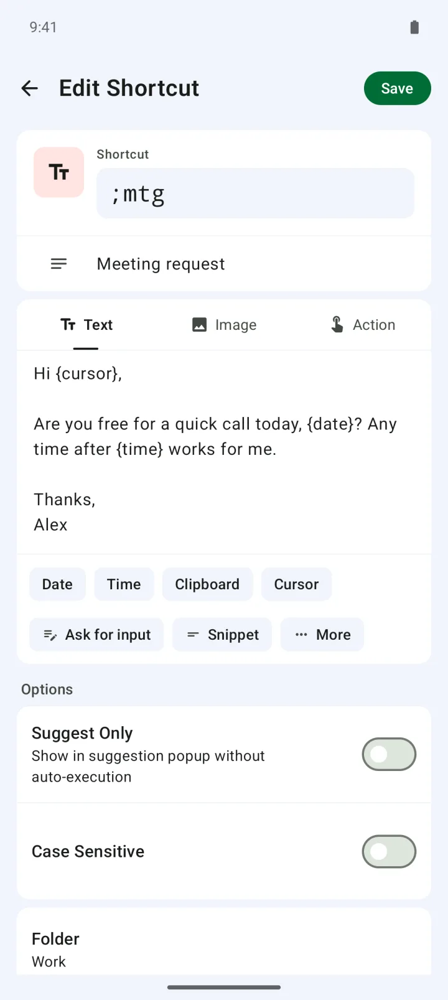
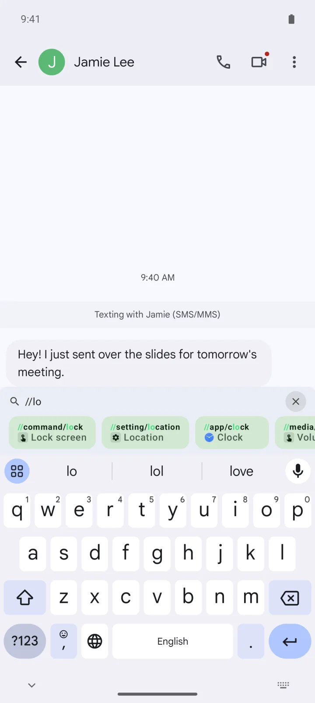
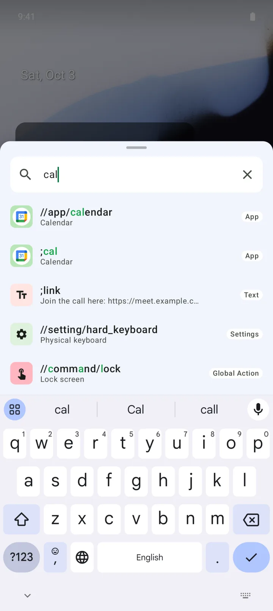
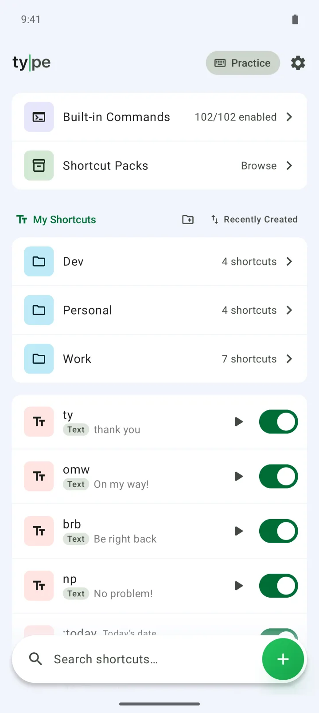

Smart text
with variables
Insert today's date, the time, your clipboard and more.

Short keywords expand into full text across your apps. Keep the keyboard you already use.
Get it on Google PlayType is a text expander for Android: type a short keyword and it turns into a full phrase, or opens an app or runs a system action, all with the keyboard you already use. It's free for up to 20 shortcuts, and a one-time lifetime upgrade (US$29.99) removes the limit and the ads.
Insert today's date, the time, your clipboard and more.

Type // to open apps and run commands.

Find apps, settings and shortcuts from anywhere.

Sort them into folders and subfolders. One switch turns off every shortcut inside a folder.

| Free | Premium | |
|---|---|---|
| Price | Free | One-time lifetime purchase, US$29.99 |
| Shortcuts | Up to 20, counting text, action and image shortcuts, ones you've turned off, and pack shortcuts | Unlimited |
| Your folders | 1, subfolders included | Unlimited |
| Ads | Yes | No |
| Excluded apps (turn Type off in chosen apps) | — | ✓ |
| Install shortcut packs | Preview only | ✓ |
| Variables, action shortcuts, built-in commands, command palette, calculator, Practice, file backup | ✓ | ✓ |
For 7 days after you first open the app, the lifetime upgrade is US$14.99. Prices vary by region.
| Type | Built-in keyboard shortcuts | Text expanders with their own keyboard | Clipboard and snippet managers | |
|---|---|---|---|---|
| What it takes | Turn on the accessibility service. Keep your keyboard | Use that keyboard | Switch to the app's keyboard | Copy, then paste |
| Expands as you type | Yes, on the keyword's last character | Usually appears as a suggestion you tap | Yes, inside that keyboard | No, you pick and paste |
| Variables like date and clipboard | {date}, {clipboard}, {fill} and more | Usually fixed text only | Varies by app | Varies by app |
| Open apps, run system actions | Action shortcuts, // commands, command palette | Usually not | Usually not | Usually not |
| Web text fields (in-app browsers) | Can't replace text there. The result is copied, so you paste it | Works, since the keyboard types the text | Usually works | Paste as usual |
| Moving to a new phone | Export and import a .json file. No automatic sync | Some keyboards sync through your account | Varies by app | Varies by app |
Type is made for this. Save a keyword and the text it stands for, then type the keyword in another app: it expands the moment you type its last character. No space needed, as long as the keyword starts a line or follows a space. You turn Type on once in Android's accessibility settings.
Yes, Type is free for up to 20 shortcuts. The free version shows ads and lets you create one folder. Variables, action shortcuts, built-in commands, the command palette, the calculator and file backup all work in the free version too.
Every shortcut counts toward the 20: ones you've turned off, action and image shortcuts, and shortcuts installed from packs. Premium removes the limit.
Premium is a one-time lifetime purchase: US$29.99 in the US and ₩44,000 in Korea, and prices vary by region. For 7 days after you first open the app, it's US$14.99. Premium removes the shortcut and folder limits and the ads, and adds excluded apps and shortcut packs.
No, Type works with the keyboard you already use. It isn't a keyboard: it uses Android's accessibility service to spot your keywords and replace them.
It works in regular text fields, but not in web text fields or inside the Type app itself. In web text fields, such as in-app browsers, Type copies the result to your clipboard, so delete the keyword and paste. To try a shortcut without leaving Type, use Practice.
No. Type reads text fields only to spot your keywords, and never sends what you type to any server. Your shortcuts and settings are stored on your device, and the developer has no server that receives them. Usage stats record events like which kind of action ran, never your shortcuts or what you type.
It's how shortcuts run, so with it off, nothing works. Type uses the accessibility service to detect typing and swap in text, show suggestions and the command palette over other apps, and run system actions like Home, Back and screenshot.
No. Type runs only on Android 10 and later. There's no iPhone, iPad or PC version.
Export your shortcuts to a .json file in Settings › Backup & restore, then import that file on the new phone. Image shortcuts come along; shortcut packs, excluded apps and settings like the theme don't. There's no automatic cloud sync between devices. To get Premium back, tap Restore purchase on the Premium card at the top of Settings.
Yes. A shortcut can open an app, open two apps in split screen, call a contact, open a website or run a Tasker task. Built-in commands like //command/home and //media/next work with no setup. On a physical keyboard, Ctrl+Space opens the command palette, where you can search and run shortcuts, apps and settings.
Yes. Add variables like {date}, {time} or {clipboard}, and they're filled in each time the shortcut expands. You can set a format, like {date:MMM d, yyyy}, or shift the date with {date offset="+3d"}. {fill:name} asks you for a value when you use the shortcut, and asks just once even if the same name appears in several places.
The privacy policy also covers what the ad, usage statistics and crash reporting services included in the app collect.
Read the privacy policy